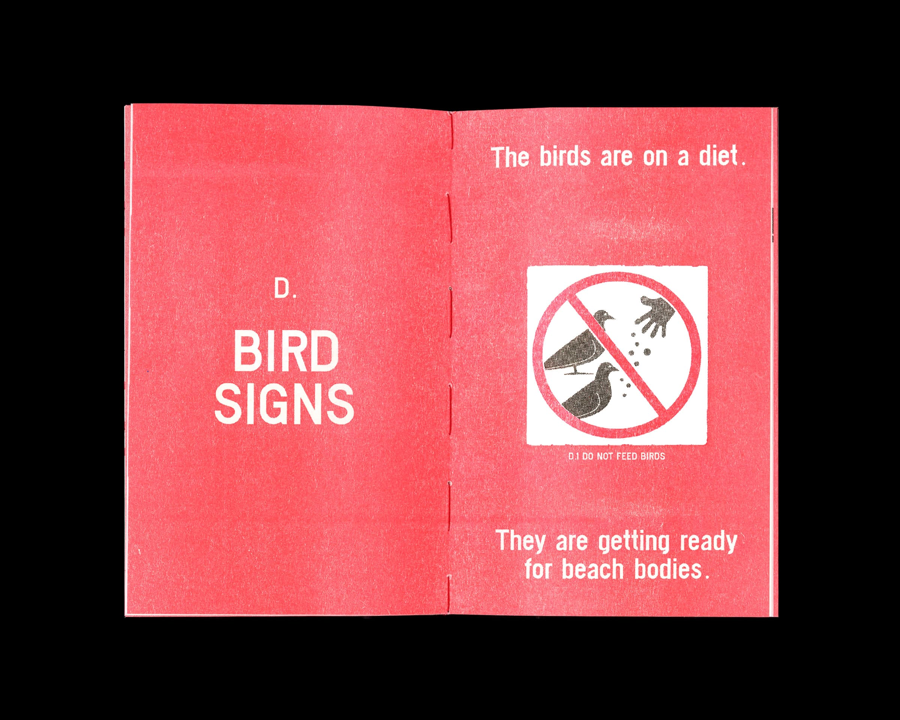
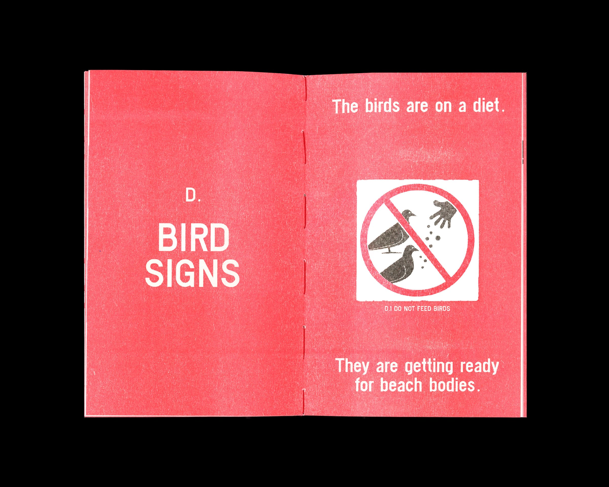

#
Publication, Zine
Title
Ei
Purpose
Personal Project
Year
2024
Collecting signs is a fun way to observe a city. During the summer of 2023, in Helsinki, Finland, I collected some prohibitory or regulatory signs as a playful way to understand the city as an outsider. 'Ei', which means 'No' in Finnish, documents 53 Finnish prohibitory signs in 5 categories based on the type of prohibition. I used a Finnish traffic sign typeface, a minimized color palette, and five Xs on the book spine for straightforward communication.


 
